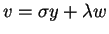
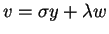
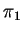
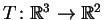
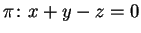
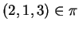
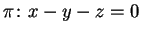
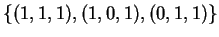
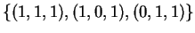

| Questão | Valor | Nota | Revis. | |||||
| 1 | 2.5 | |||||||
| 2 | 1.0 | |||||||
| 3a | 0.5 | |||||||
| 3b | 1.0 | |||||||
| 3c | 1.0 | |||||||
| 3d | 1.0 | |||||||
| 4a | 0.5 | |||||||
| 4b | 1.0 | |||||||
| 4c | 1.0 | |||||||
| 4d | 0.5 | |||||||
| Total | 10.0 |
Marque no quadro as respostas da primeira questão. Não é necessário justificar esta questão.
ATENÇÃ0: resposta errada vale ponto negativo!, a questão pode ter nota negativa!
| Para uso exclusivo do professor | ***** | ***** |
Certas: |
0.3 | |
Erradas: |
-0.2 | |
***** |
Total | |
1) Decida se cada afirmação a seguir é verdadeira ou falsa e marque com caneta sua resposta no quadro abaixo. Atenção: responda todos os itens, use "N = não sei" caso você não saiba a resposta. Cada resposta certa vale 0.3, cada resposta errada vale -0.2, cada resposta N vale 0. Respostas confusas e ou rasuradas valerão -0.2.
| Itens | V | F | N | |
| 1.a | ||||
| 1.b | ||||
| 1.c | ||||
| 1.d | ||||
| 1.e | ||||
| 1.f | ||||
| 1.g | ||||
| 1.h | ||||
| 1.i |
1.a)
Seja P uma transformação linear de
 tal que
tal que
 ,
então
P é uma
projeção ortogonal.
,
então
P é uma
projeção ortogonal.
1.b)
Considere vetores v, y e w de
 linearmente dependentes.
Então existem números reais
linearmente dependentes.
Então existem números reais  e
e  tais que
.
tais que
.
1.c)
Seja
 uma projeção ortogonal em um plano e
uma projeção ortogonal em um plano e
 um
espelhamento em um plano.
Então
um
espelhamento em um plano.
Então
 é uma projeção
ortogonal.
é uma projeção
ortogonal.
1.d)
Sejam ,
 e
e  três planos de
três planos de
 contendo a origem e P1, P2 e P3
as respetivas projeções ortogonais
nestes planos. Suponha que
contendo a origem e P1, P2 e P3
as respetivas projeções ortogonais
nestes planos. Suponha que
 é a
transformação linear nula. Então os planos se
interceptam em um ponto.
é a
transformação linear nula. Então os planos se
interceptam em um ponto.
1.e)
Dada uma base
 de
de
 considere a nova base
considere a nova base
 de
de
 .
Considere o vetor h cujas coordenadas na base
.
Considere o vetor h cujas coordenadas na base
 são (1,1,1). Então as coodenadas
de h na base
são (1,1,1). Então as coodenadas
de h na base  são
(1/3,2/3,1/3).
são
(1/3,2/3,1/3).
1.f)
A matriz

1.g)
Seja A uma matriz  inversível. Suponha
que A2=2 A. Então
inversível. Suponha
que A2=2 A. Então  .
.
1.h)
Existe uma projeção ortogonal
 tal que
P(1,1,2)=(0,1,1).
tal que
P(1,1,2)=(0,1,1).
1.i) Existe uma transformação linear tal que T(1,0,0)=(1,1), T(1,1,0)=(1,1), T(1,1,1)=(1,1).
2) Determine quais das matrizes
2.a)

2.b)

3) Considere a projeção Pno plano  na direção do vetor (1,-1,-1).
3.a) Seja u=(4,-1,1)=(2,-2,-2)+(2,1,3)(onde ). Sem determinar a matriz de P, calcule P(u).
3.b) Determine a matriz de P.
3.c) Sejam M a projeção ortogonal na reta (t,-t,-t) e N a projeção ortogonal no plano . Determine as matrizes de M e N.
3.d)
Determine as matrizes de
e  .
.
4)
Seja  a base formada pelos vetores
.
a base formada pelos vetores
.
4.a)
Verifique que  é uma base.
é uma base.
4.b)
Determine as coordenadas do vetor v=(1,2,3) na base  .
.
4.c)
Seja S a
transformação linear definida por
4.d)
Determine se a matriz de S é inversível e em caso afirmativo
determine sua inversa.